Рассчитывать на него не стоит
Всё необходимое скачать до рейса
Отключить обновления на и .
надежнее при малой пропускной способности
Зафиксировать с момента начала до момента окончания рейса для всех участников и всех устройств на вахте
Запись трека разными приборами (потеря сигнала, разряд батарей)
Задать часовой пояс
EXIF нужен
Время и часовой пояс по GPS
Карандаш
Время начала и окончания вахты
Ширина учётной полосы (при каждом изменении)
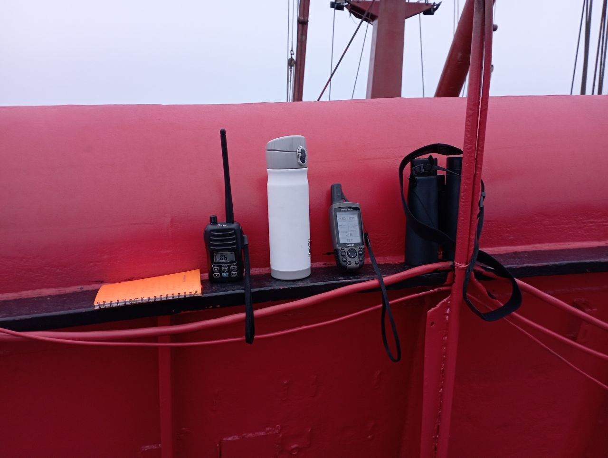
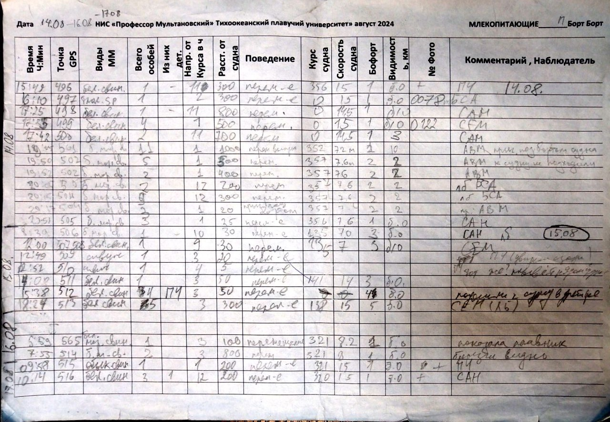
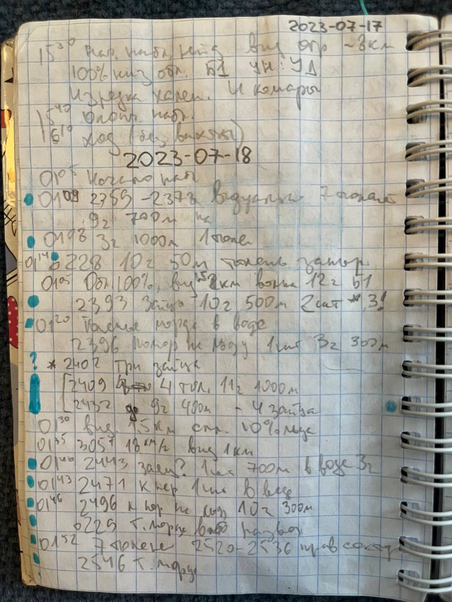
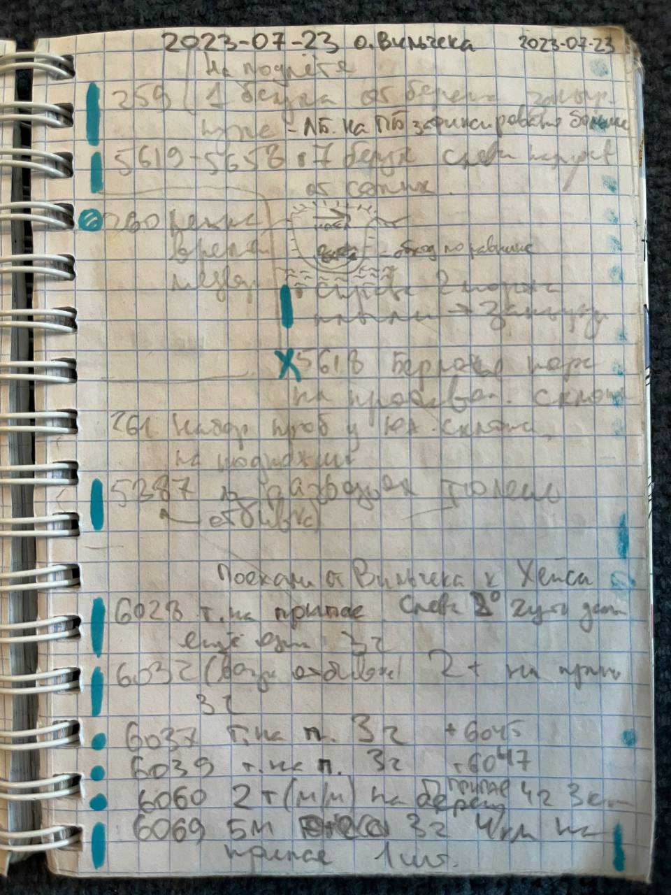
Важно отметить время любым способом:
Поставить метку GPS, ввести в запись три цифры метки
Сделать фотографию (пусть даже «отбивку»), ввести в запись четыре цифры фото или диапазон номеров фото серийной съемки.
Выписать время (стараться до секунд) с GPS или наручных часов
GPS пишет маршрут. При записи маршрута фиксируются и координаты, и время. По известному времени находки оцениваются её координаты.
Не откладывать
какие-то пропущенные записи можно восстановить в памяти
бывает, что даже свой почерк требует расшифровки
бумажные записи могут потеряться
Время, даты в формате ISO 8601 (YYYY-MM-DD HH:MM:SS, YYYY-MM-DD)
Камеральная обработка уточняет наблюдения
Наборы данных («слои» в терминологии ГИС)
waypoints
routes
tracks
route_points
track_points
Импорт данных либо непосредственным чтением данных из внутренней памяти прибора или флеш-карты, либо с помощью дополнительного программного обеспечения, например, программой MapSource для приборов Garmin.
По-умолчанию, программа MapSource сохраняет в формате GDB.
В этом случае можно воспользоваться утилитой gpsbabel, которая входит в состав QGIS (возможно, устанавливается отдельным пакетом установщика OSGeo4W).
Пример скрипта на R для конвертации GDB-файлов в GPX-файлы:
Sys.setenv(PATH=paste0("C:\\Software\\OSGeo4W\\apps\\Qt5\\bin;",Sys.getenv("PATH")))
src <- dir(pattern="2023.+\\.gdb$",recursive=TRUE,full.names=TRUE)
dst <- gsub("\\.gdb$",".gpx",src)
ind <- which(!file.exists(dst) | file.size(dst)==0)
if (length(ind)) {
cmd <- paste("gpsbabel -w -r -t -i gdb,via=0,roadbook=0"
,"-f",src[ind]
,"-o gpx,suppresswhite=0,logpoint=0,humminbirdextensions=0,garminextensions=0"
,"-F",dst[ind])
print(cmd)
sapply(cmd,system)
}R-библиотека sf может прочесть GDB при установленной QGIS и прописанным путям к gpsbabel и другим необходимым библиотекам.
Формат GPX, поддерживаемый GDAL (R, QGIS)
74.776161
269
Animal Tracks
14.786
074
20-NOV-03 21:28:46
20-NOV-03 21:28:46
Golf Course
149.610
048
048
048
Museum
ACTIVE LOG 001
17.922
19.364
ACTIVE LOG 002
25.132
25.132
24.170
24.651
24.651
24.651
25.132
Переименовать исходные файлы
в новом имени файла должна содержаться информация о времени съемки
убедиться, что EXIF не пропадает
| size | isdir | mode | mtime | exe | uname | udomain | |
|---|---|---|---|---|---|---|---|
| 20230718-012638-2408.jpg | 559244 | FALSE | 666 | 2023-07-17 22:26:38 | no | Администраторы | BUILTIN |
| 20230718-012639-2409.jpg | 549317 | FALSE | 666 | 2023-07-17 22:26:40 | no | Администраторы | BUILTIN |
| 20230718-012639-2410.jpg | 554643 | FALSE | 666 | 2023-07-17 22:26:40 | no | Администраторы | BUILTIN |
| 20230718-012639-2411.jpg | 551275 | FALSE | 666 | 2023-07-17 22:26:40 | no | Администраторы | BUILTIN |
| 20230718-012805-2412.jpg | 590298 | FALSE | 666 | 2023-07-17 22:28:04 | no | Администраторы | BUILTIN |
| 20230718-012805-2413.jpg | 583264 | FALSE | 666 | 2023-07-17 22:28:04 | no | Администраторы | BUILTIN |
| 20230718-012858-2414.jpg | 697853 | FALSE | 666 | 2023-07-17 22:28:58 | no | Администраторы | BUILTIN |
| 20230718-012859-2415.jpg | 703233 | FALSE | 666 | 2023-07-17 22:28:58 | no | Администраторы | BUILTIN |
| 20230718-012900-2416.jpg | 689682 | FALSE | 666 | 2023-07-17 22:29:00 | no | Администраторы | BUILTIN |
| 20230718-012935-2417.jpg | 654982 | FALSE | 666 | 2023-07-17 22:29:34 | no | Администраторы | BUILTIN |
| 20230718-012935-2418.jpg | 663912 | FALSE | 666 | 2023-07-17 22:29:36 | no | Администраторы | BUILTIN |
| 20230718-013018-2419.jpg | 559580 | FALSE | 666 | 2023-07-17 22:30:18 | no | Администраторы | BUILTIN |
| 20230718-013018-2420.jpg | 550939 | FALSE | 666 | 2023-07-17 22:30:18 | no | Администраторы | BUILTIN |
| 20230718-013111-2430.jpg | 631630 | FALSE | 666 | 2023-07-17 22:31:12 | no | Администраторы | BUILTIN |
| 20230718-013119-2431.jpg | 624154 | FALSE | 666 | 2023-07-17 22:31:18 | no | Администраторы | BUILTIN |
| 20230718-013121-2432.jpg | 620069 | FALSE | 666 | 2023-07-17 22:31:20 | no | Администраторы | BUILTIN |
| 20230718-014054-2433.jpg | 628477 | FALSE | 666 | 2023-07-17 22:40:54 | no | Администраторы | BUILTIN |
| 20230718-014055-2434.jpg | 626081 | FALSE | 666 | 2023-07-17 22:40:56 | no | Администраторы | BUILTIN |
| 20230718-014055-2435.jpg | 634811 | FALSE | 666 | 2023-07-17 22:40:56 | no | Администраторы | BUILTIN |
| 20230718-151545-3877.jpg | 1021547 | FALSE | 666 | 2023-07-18 12:15:44 | no | Администраторы | BUILTIN |
Время съёмки извлекать из EXIF. Очень часто при серийной съемке изображения находятся в оперативной памяти фотоаппарата и последовательно записываются на карту памяти. Этот процесс может занять несколько секунд. Это наиболее критично при авиаучётах.
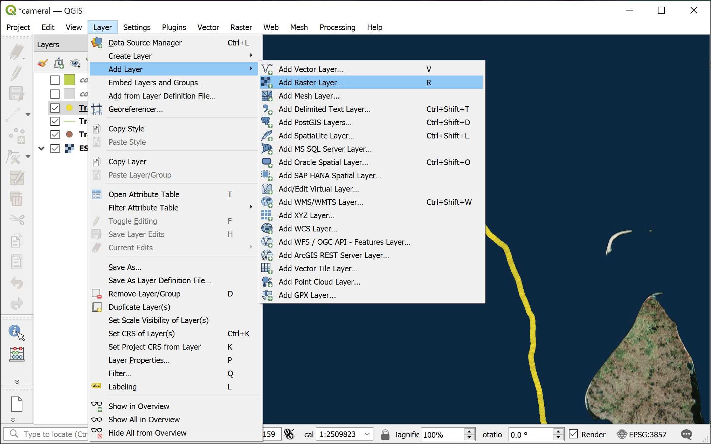
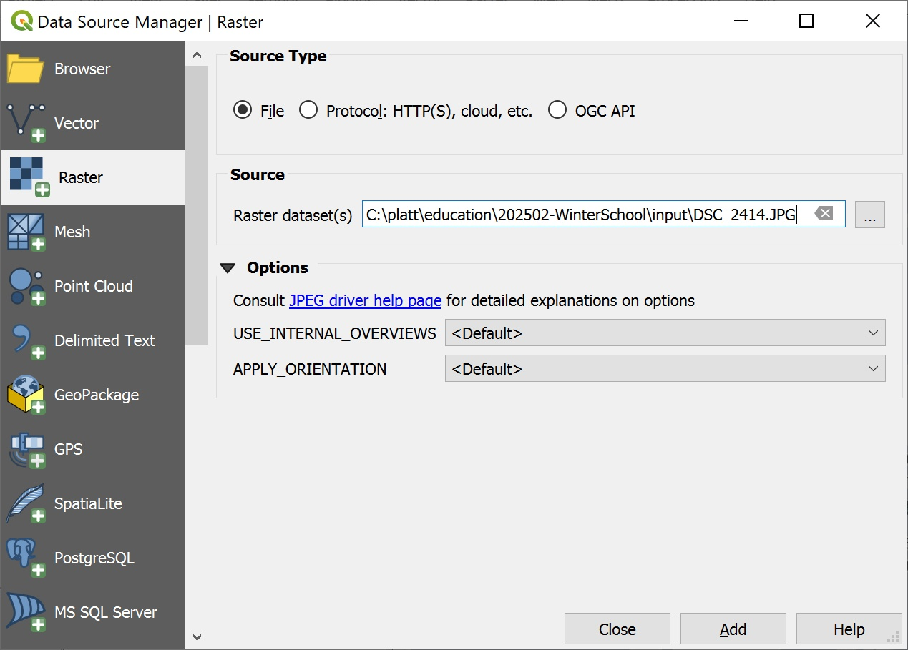
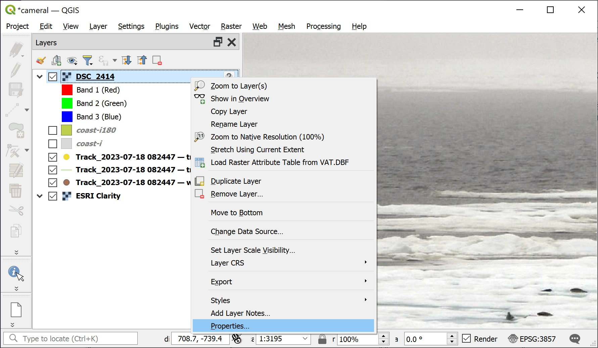
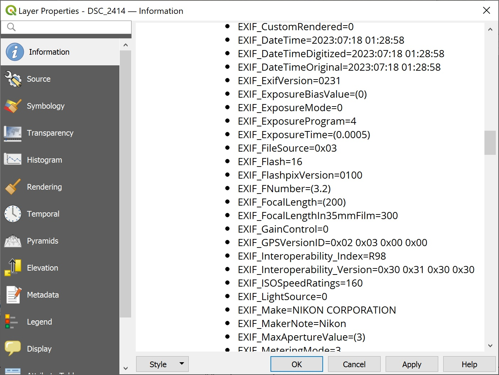
Driver: JPEG/JPEG JFIF
Files: ./input/DSC_2414.JPG
Size is 2144, 1429
Metadata:
EXIF_Artist=
EXIF_CFAPattern=0x02 0x00 0x02 0x00 0x00 0x01 0x01 0x02
EXIF_ColorSpace=1
EXIF_ComponentsConfiguration=0x01 0x02 0x03 0x00
EXIF_CompressedBitsPerPixel=(4)
EXIF_Contrast=0
EXIF_Copyright=
EXIF_CustomRendered=0
EXIF_DateTime=2023:07:18 01:28:58
EXIF_DateTimeDigitized=2023:07:18 01:28:58
EXIF_DateTimeOriginal=2023:07:18 01:28:58
EXIF_ExifVersion=0231
EXIF_ExposureBiasValue=(0)
EXIF_ExposureMode=0
EXIF_ExposureProgram=4
EXIF_ExposureTime=(0.0005)
EXIF_FileSource=0x03
EXIF_Flash=16
EXIF_FlashpixVersion=0100
EXIF_FNumber=(3.2)
EXIF_FocalLength=(200)
EXIF_FocalLengthIn35mmFilm=300
EXIF_GainControl=0
EXIF_GPSVersionID=0x02 0x03 0x00 0x00
EXIF_Interoperability_Index=R98
EXIF_Interoperability_Version=0x30 0x31 0x30 0x30
EXIF_ISOSpeedRatings=160
EXIF_LightSource=0
EXIF_Make=NIKON CORPORATION
EXIF_MakerNote=Nikon
EXIF_MaxApertureValue=(3)
EXIF_MeteringMode=3
EXIF_Model=NIKON D7500
EXIF_OffsetTime=+00:00
EXIF_OffsetTimeDigitized=+00:00
EXIF_OffsetTimeOriginal=+00:00
EXIF_Orientation=1
EXIF_PixelXDimension=2144
EXIF_PixelYDimension=1429
EXIF_RecommendedExposureIndex=160
EXIF_ResolutionUnit=2
EXIF_Saturation=0
EXIF_SceneCaptureType=0
EXIF_SceneType=0x01
EXIF_SensingMethod=2
EXIF_SensitivityType=2
EXIF_Sharpness=0
EXIF_Software=Ver.1.10
EXIF_SubjectDistanceRange=0
EXIF_SubSecTime=58
EXIF_SubSecTime_Digitized=58
EXIF_SubSecTime_Original=58
EXIF_UserComment=
EXIF_WhiteBalance=0
EXIF_XResolution=(300)
EXIF_YCbCrPositioning=2
EXIF_YResolution=(300)
Image Structure Metadata:
SOURCE_COLOR_SPACE=YCbCr
INTERLEAVE=PIXEL
COMPRESSION=JPEG
JPEG_QUALITY=95
Corner Coordinates:
Upper Left ( 0.0, 0.0)
Lower Left ( 0.0, 1429.0)
Upper Right ( 2144.0, 0.0)
Lower Right ( 2144.0, 1429.0)
Center ( 1072.0, 714.5)
Band 1 Block=2144x1 Type=Byte, ColorInterp=Red
Overviews: 1072x715, 536x358, 268x179, 160x107
Image Structure Metadata:
COMPRESSION=JPEG
Band 2 Block=2144x1 Type=Byte, ColorInterp=Green
Overviews: 1072x715, 536x358, 268x179, 160x107
Image Structure Metadata:
COMPRESSION=JPEG
Band 3 Block=2144x1 Type=Byte, ColorInterp=Blue
Overviews: 1072x715, 536x358, 268x179, 160x107
Image Structure Metadata:
COMPRESSION=JPEGtz <- c('D7500'="UTC"
,'Oregon'="Asia/Krasnoyarsk")
user <- "D7500"
src <- "./input/DSC_2414.JPG"
file.info(src)| size | isdir | mode | mtime | ctime | atime | exe | uname | udomain | |
|---|---|---|---|---|---|---|---|---|---|
| ./input/DSC_2414.JPG | 697853 | FALSE | 666 | 2023-07-17 22:28:58 | 2025-02-08 12:17:13 | 2026-03-06 13:55:22 | no | Администраторы | BUILTIN |
photoID <- gsub(".*\\D(\\d{4})\\D.*","\\1",basename(src))
a <- sf::gdal_utils("info",src,quiet=TRUE)
a <- strsplit(a,split="\\n")[[1]]
patt1 <- "\\s*EXIF_DateTimeOriginal=(.+)"
if (length(ind1 <- grep(patt1,a))==1) {
t3 <- gsub(patt1,"\\1",a[ind1])
t3 <- as.POSIXct(t3,format="%Y:%m:%d %H:%M:%S",tz="UTC")
patt2 <- "\\s*EXIF_OffsetTimeOriginal=(.+)"
if (length(ind2 <- grep(patt2,a))==1) {
tz3 <- gsub(patt2,"\\1",a[ind2])
print(c(TZ=tz3))
t3 <- t3-(as.difftime(as.numeric(gsub("^(.+):(.+)$","\\1",tz3))+
as.numeric(gsub("^(.+):(.+)$","\\2",tz3))/60,units="hours"))
t3 <- as.POSIXct(t3,tz=tz[user])
}
print(c(t3=t3))
print(c(photoID=photoID))
dst <- file.path("./output",paste0(format(t3,"%Y%m%d-%H%M%S-"),photoID
,tolower(gsub(".*(\\..+$)","\\1",basename(src)))
))
print(data.frame('src'=src,'dst'=dst))
} TZ
"+00:00"
t3
"2023-07-18 01:28:58 UTC"
photoID
"2414"
src dst
1 ./input/DSC_2414.JPG ./output/20230718-012858-2414.jpgif (!dir.exists("./output"))
dir.create("./output")
# file.rename(src,dst)
file.copy(src,dst,overwrite=TRUE,copy.date=TRUE)[1] TRUEПолётное время и дальность полёта не позволяет провести учёт галсами.
Учёт наиболее населенной страты местообитаний, с манёврами.
Таблица находок формируется в ГИС с целью исключить повторный учёт.
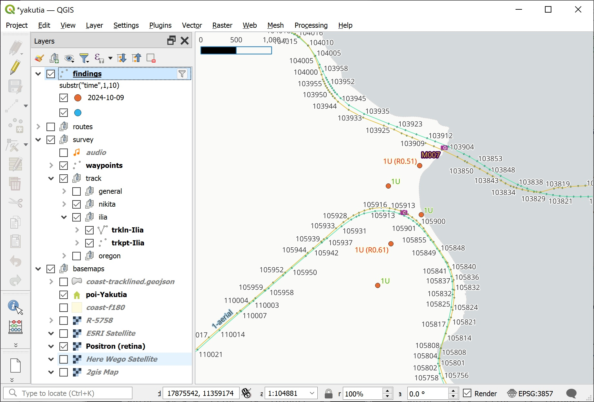
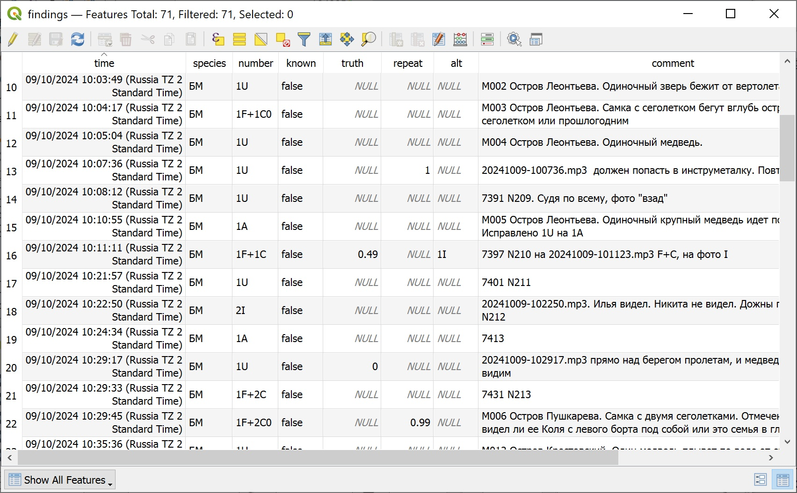
Загрузить фотографию
Посмотреть ее свойства
Треки - запись фактического маршрута. Непрерывный трек желателен для включения в отчёт.
Непрерывная запись треков маловероятна:
Выключение устройства с целью замены батареек/аккумуляторов.
Батарейки сели
Спутники нашлись не сразу или забыли вовремя включить
В итоге, запись маршрута фрагментарна. Необходимость объединения фрагментов.
Запись трека осуществлялась несколькми устройствами. Устройство «Zhenya» находилось в каюте, устройство «Oregon» – у наблюдателя. Приоритетным считается устройство наблюдателя, но в случае отсутствия записи с устройства наблюдателя используются записи с запасного устройстваю
Sys.setenv(TZ="UTC")
t0 <- as.POSIXct("2023-07-04")
'getTrack' <- function(device,vehicle=FALSE,ltraj=FALSE,inside=NULL) {
if (missing(device))
return(NULL)
if (!ursa::is_spatial(device)) {
list1 <- dir(path=file.path("./input",device)
,pattern=".*20[x2]3.+\\.gpx$",full.names=TRUE)
res <- lapply(list1,\(fname) {
a <- sf::st_read(fname,layer="track_points",quiet=TRUE)[,1:5]
a <- a[!is.na(a$time),]
if (!ursa::spatial_count(a))
return(NULL)
taf <- table(track_fid=a$track_fid)
tas <- table(track_seg_id=a$track_seg_id)
if (length(tas)>length(taf)) {
b <- by(a,a$track_seg_id,\(x) x)
}
else {
b <- by(a,a$track_fid,\(x) x)
}
a <- lapply(b,\(x) {
rt <- range(x$time)
y <- ursa::trackline(x)
len <- ursa::spatial_length(y)
dur <- as.numeric(diff(range(x$time)),units="hours")
speed <- len*1e-3/dur
sa <- data.frame(n=ursa::spatial_count(x),length=len,dur=dur,speed=speed
,from=rt[1],to=rt[2])
cond1 <- sa$dur>10/60 & sa$n>10
sa <- sa[cond1,]
if (!cond1)
return(NULL)
x$device <- tolower(device)
x$segment <- digest::digest(x,"crc32")
tail(x[,c("time","ele","device","segment")],-1)
}) |> do.call(ursa::spatial_bind,args=_)
a
}) |> ursa::spatial_bind()
res <- res[order(res$time),]
if (vehicle) {
if (length(ind <- grep("^(cruise|road)",res$survey,invert=TRUE))) {
res <- res[-ind,]
}
}
if (!is.null(inside)) {
cond <- vector("list",nrow(inside))
for (i in seq(nrow(inside))) {
if (!inside$fill[i])
cond[[i]] <- integer()
else {
j <- which(res$time>inside$begin[i] & res$time<inside$end[i])
cond[[i]] <- j
}
}
cond <- sort(unlist(cond))
if (!length(cond))
return(NULL)
res <- res[cond,]
}
res$id <- "merge"
}
else {
res <- device
ltraj <- TRUE
}
if (!ltraj)
return(res)
if (length(ind <- which(duplicated(res$time)))) {
res <- res[-ind,]
}
res2 <- adehabitatLT::as.ltraj(sf::st_coordinates(res)
,date=res$time
,id=res$id
,proj4string=sp::CRS(sf::st_crs(res)$proj4string)
)
opW <- options(warn=-1)
res3 <- adehabitatLT::cutltraj(res2,"dt>c(days=1)*c(hour=1)*c(min=12)*c(sec=60)"
,nextr=TRUE)
options(opW)
res3
}
'inside' <- function(device,dt=as.difftime(12,units="mins"),dl=50) {
if (is.null(device))
return(NULL)
ind1 <- which(diff(device$time)>dt)
begin <- c(t0,device$time[ind1],max(device$time)+1)
end <- c(min(device$time)-1,device$time[ind1+1],as.POSIXct(Sys.Date()+1))
ret <- data.frame(from=c(NA,ind1,NA),to=c(NA,ind1+1,NA)
,device=head(device$device,1)
,begin=begin
,end=end
,length=NA
,fill=TRUE
)
for (i in seq(nrow(ret)) |> sample()) {
ind <- c(ret$from[i],ret$to[i])
if (anyNA(ind))
next
ret$length[i] <- ursa::trackline(device[ind,]) |> ursa::spatial_length() |> round()
}
ret$dt <- as.numeric(ret$end-ret$begin,units="hours") |> round(1)
ret$fill[ret$length<dl] <- FALSE
ret
}
'suppl' <- function(main,suppl,vehicle=FALSE) {
more <- getTrack(suppl,inside=inside(main),vehicle=vehicle,ltraj=!TRUE)
main <- ursa::spatial_bind(main,more)
main <- main[order(main$time),]
main
}
priority <- list(oregon=c("Oregon","Zhenya"))
pname <- names(priority)
for (i in seq_along(priority)) {
message(pname[i],":")
vehicle <- pname[i] %in% "general"
main <- getTrack()
for (device in priority[[i]]) {
message(" ",device,":")
main <- suppl(main,device,vehicle=vehicle)
}
print(getTrack(main,ltraj=TRUE))
main <- main[,c("id","time","ele","device")]
trkpt <- file.path("./output",paste0("track-",pname[i],".geojson"))
ursa::spatial_write(main,trkpt)
print(file.info(trkpt)[,"size",drop=FALSE])
tr <- ursa::trackline(main,by=main$id,connect="united")
trkln <- file.path(dirname(trkpt),gsub("^track","trackline",basename(trkpt)))
ursa::spatial_write(tr,trkln)
print(file.info(trkln)[,"size",drop=FALSE])
}
*********** List of class ltraj ***********
Type of the traject: Type II (time recorded)
* Time zone unspecified: dates printed in user time zone *
Irregular traject. Variable time lag between two locs
Characteristics of the bursts:
id burst nb.reloc NAs date.begin date.end
1 merge merge.1 1863 0 2023-07-17 15:52:54 2023-07-18 09:13:54
2 merge merge.2 83 0 2023-07-18 13:13:47 2023-07-18 13:52:48
3 merge merge.3 447 0 2023-07-18 14:39:20 2023-07-18 17:01:13
infolocs provided. The following variables are available:
[1] "pkey"
size
./output/track-oregon.geojson 406580
size
./output/trackline-oregon.geojson 52248Поискать подходящий среди плагинов
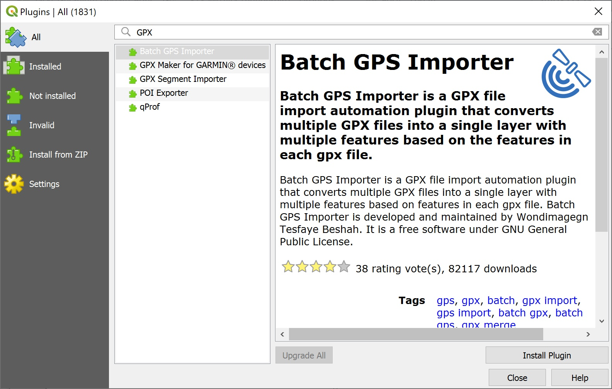
Например, Batch GPS Importer
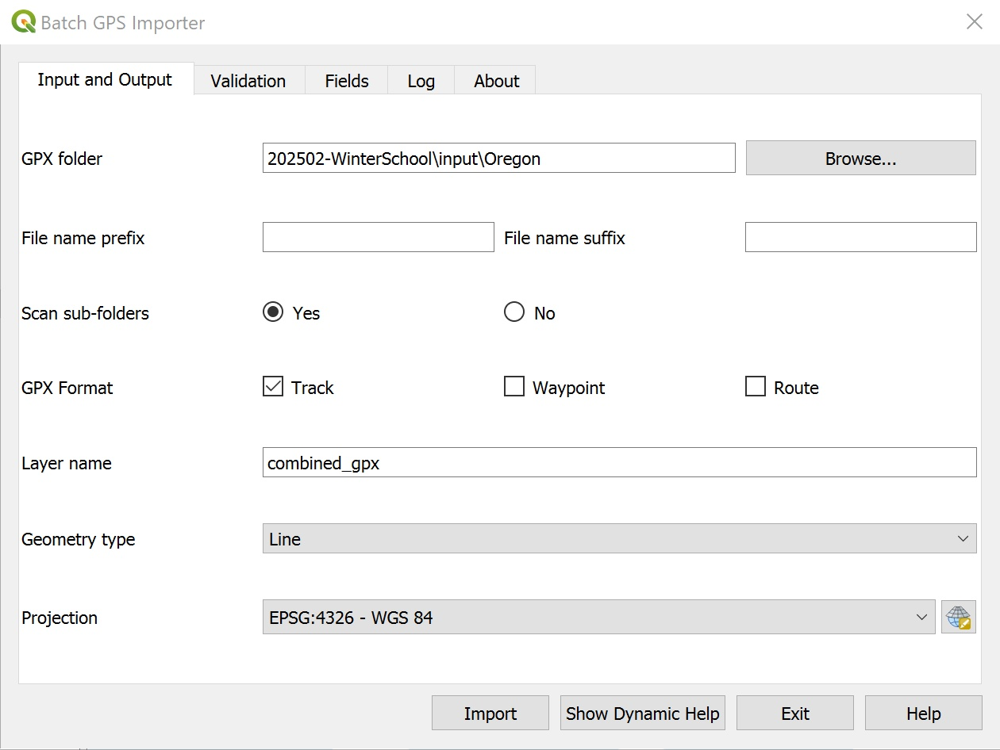
Simple feature collection with 30395 features and 4 fields
Geometry type: POINT
Dimension: XY
Bounding box: xmin: -1821458 ymin: -2215496 xmax: 119951.6 ymax: -954666
Projected CRS: stere lon_0=79.29 lat_0=90 lat_ts=73.01 'WGS 84'
First 10 features:
id time ele device geometry
1 merge 2023-07-04 07:33:55 -6.75 zhenya POINT (-1771075 -2204679)
2 merge 2023-07-04 07:34:55 -6.27 zhenya POINT (-1771055 -2204634)
3 merge 2023-07-04 07:35:55 -6.41 zhenya POINT (-1771011 -2204556)
4 merge 2023-07-04 07:36:55 -6.22 zhenya POINT (-1770954 -2204470)
5 merge 2023-07-04 07:37:55 -6.12 zhenya POINT (-1770939 -2204446)
6 merge 2023-07-04 07:38:55 -6.62 zhenya POINT (-1770978 -2204480)
7 merge 2023-07-04 07:39:55 -6.96 zhenya POINT (-1771069 -2204512)
8 merge 2023-07-04 07:40:55 -6.93 zhenya POINT (-1771156 -2204518)
9 merge 2023-07-04 07:41:55 -7.51 zhenya POINT (-1771202 -2204509)
10 merge 2023-07-04 07:42:55 -7.51 zhenya POINT (-1771190 -2204494)Geometry set for 1 feature
Geometry type: LINESTRING
Dimension: XY
Bounding box: xmin: -1821458 ymin: -2215496 xmax: 119951.6 ymax: -954666
Projected CRS: +proj=stere +lat_0=90 +lat_ts=73.0118 +lon_0=79.2854 +x_0=0 +y_0=0 +datum=WGS84 +units=m +no_defs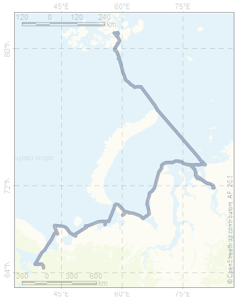
trkdaily <- trackline(trkpt,by=list('Дата'=as.Date(trkpt$time)))
ct <- colorize(trkdaily$'Дата',pal.bright=127,pal.rotate="circle") |> ursa_colortable()
glance(trkdaily["Дата"],col=ct,resetGrid=TRUE,blank="aliceblue",coast.fill="lightyellow"
,basemap.order="before",pointsize=12)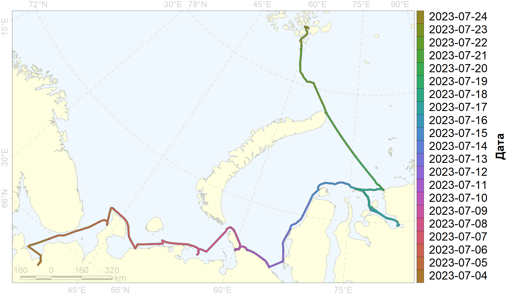
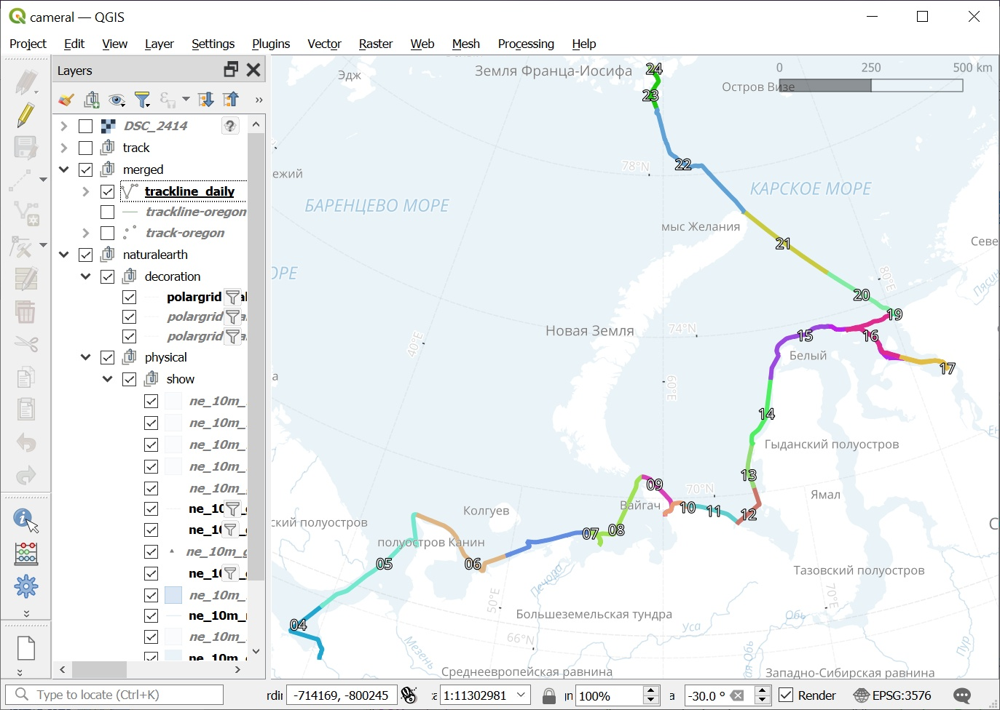
Загрузить треки
Настроить стили для отображения
Раскраска
Подписи
Содержит информацию о названии метки, её времени и координатах. Как правило, это трехзначное число: 002, 012, 312.
В учётный лист или полевой дневник заносятся четыре последних цифры. Каждые 10 тыс. снимков эти цифры могут повториться. В таблице находок указывается дата, чтобы исключить неоднозначность по 4 последним цифрам.
По дате и четырём последним цифрам находится имя файла снимка. Из этого имени извлекается информаиц
Иногда может быть приблизительное, особенно если находка сделана участниками экспедиции или членами экипажа.
Sys.setenv(TZ="UTC")
a <- readxl::read_excel("./input/marmam.xlsx",sheet="mammals")
ind <- is.na(a[["Повтор"]])
a <- a[ind,]
d3 <- a[["Дата"]] |> as.Date()
a[["Дата"]] <- tidyr::fill(data.frame(d3=d3),"d3",.direction="down")[[1]]
a$time <- Sys.time()
a$time[] <- NA
a$lon <- NA_real_
a$lat <- NA_real_
trkFname <- "./input/Oregon/Track_2023-07-18 082447.gpx"
print(sf::st_layers(trkFname))Driver: GPX
Available layers:
layer_name geometry_type features fields crs_name
1 waypoints Point 0 23 WGS 84
2 routes Line String 0 12 WGS 84
3 tracks Multi Line String 1 13 WGS 84
4 route_points Point 0 25 WGS 84
5 track_points Point 1268 26 WGS 84Simple feature collection with 1268 features and 2 fields
Geometry type: POINT
Dimension: XY
Bounding box: xmin: 76.62792 ymin: 71.86019 xmax: 82.72364 ymax: 73.51395
Geodetic CRS: WGS 84
First 10 features:
time ele geometry
1 2023-07-17 16:04:28 7.79 POINT (82.72364 71.86383)
2 2023-07-17 16:04:29 7.80 POINT (82.72352 71.86384)
3 2023-07-17 16:05:47 7.80 POINT (82.72199 71.86266)
4 2023-07-17 16:06:03 7.80 POINT (82.72175 71.8625)
5 2023-07-17 16:09:13 7.80 POINT (82.72044 71.86077)
6 2023-07-17 16:09:20 7.80 POINT (82.7201 71.8606)
7 2023-07-17 16:09:24 7.80 POINT (82.71994 71.86048)
8 2023-07-17 16:09:27 10.95 POINT (82.71983 71.86039)
9 2023-07-17 16:09:29 14.02 POINT (82.71975 71.86033)
10 2023-07-17 16:09:31 14.82 POINT (82.71968 71.86028)Driver: GPX
Available layers:
layer_name geometry_type features fields crs_name
1 waypoints Point 9 23 WGS 84
2 routes Line String 0 12 WGS 84
3 tracks Multi Line String 0 12 WGS 84
4 route_points Point 0 25 WGS 84
5 track_points Point 0 26 WGS 84wpt <- sf::st_read(wptFname,layer="waypoints",quiet=TRUE)[,c("time","name","ele","sym")]
wpt$name <- paste0("О",wpt$name)
print(wpt)Simple feature collection with 9 features and 4 fields
Geometry type: POINT
Dimension: XY
Bounding box: xmin: 76.00353 ymin: 72.66492 xmax: 78.77027 ymax: 73.54822
Geodetic CRS: WGS 84
time name ele sym geometry
1 2023-07-18 01:14:32 О228 30.52069 Animal Tracks POINT (78.77027 72.66492)
2 2023-07-18 01:50:02 О229 21.19933 Animal Tracks POINT (78.54281 72.72084)
3 2023-07-18 02:32:56 О230 14.74249 Animal Tracks POINT (78.31423 72.74485)
4 2023-07-18 02:59:26 О231 12.97899 Animal Tracks POINT (78.23512 72.81431)
5 2023-07-18 04:44:35 О232 15.16237 Animal Tracks POINT (78.04303 73.11846)
6 2023-07-18 05:01:37 О233 13.45486 Animal Tracks POINT (77.97593 73.16531)
7 2023-07-18 05:17:40 О234 13.96805 Animal Tracks POINT (77.90786 73.20753)
8 2023-07-18 14:39:45 О235 15.53560 Animal Tracks POINT (76.00353 73.5481)
9 2023-07-18 15:15:36 О236 16.46867 Animal Tracks POINT (76.33078 73.54822)'wptTime' <- function(a,wpt) {
patt <- ".*([A-ZА-Я]\\d{3}).*"
pt <- a[["Точка трека"]]
ind <- grep(patt,pt)
pt[ind] <- gsub(patt,"\\1",pt[ind])
ind2 <- match(wpt$name,pt[ind])
ind2pt <- ind[na.omit(ind2)]
# print(ind2pt)
ind2w <- which(!is.na(ind2))
# print(wpt[ind2w,])
# a[ind2pt,c("lon","lat")] <- ursa::spatial_coordinates(wpt[ind2w,])
a[["time"]][ind2pt] <- wpt[["time"]][ind2w]
print(a[ind2pt,c("Время UTC","time","Точка трека","Вид")])
a
}
a <- wptTime(a,wpt)# A tibble: 7 × 4
`Время UTC` time `Точка трека` Вид
1 01:14 2023-07-18 01:14:32 О228 Тюлень sp
2 2023-07-18 01:50:02 О229 Тюлень sp
3 02:59 2023-07-18 02:59:26 О231 Тюлень sp
4 2023-07-18 04:44:35 О232 Белуха
5 05:01 2023-07-18 05:01:37 О233 Белуха
6 2023-07-18 05:17:40 О234 Кольчатая нерпа
7 15:15 2023-07-18 15:15:36 О236 3877 Кольчатая нерпа 'photoTime' <- function(a,photoDir) {
list1 <- dir(path=file.path("./input",photoDir)
,pattern="\\d{4}\\.jpg$",full.names=TRUE)
list2 <- basename(list1)
photo <- a[["Точка трека"]]
ind <- grep("\\D*\\d{4}\\D*",photo)
ph <- gsub("[А-Я]\\d{3}\\D*","",photo[ind])
ph <- gsub("\\s+","",ph)
ph <- gsub("^\\D|\\D$","",ph)
ph <- strsplit(ph,split="(\\s+|,\\s*)")
ph <- lapply(ph,\(x) {
y <- strsplit(x,split="\\s*-\\s*")[[1]]
if (length(y)==1)
return(y)
y <- as.integer(y)
y <- sprintf("%04d",sort(seq(y[1],y[2])))
})
d3 <- a[["Дата"]][ind]
found <- vector("list",length(d3))
for (i in seq_along(d3) |> sample()) {
if (!is.na(a[["time"]][ind][i]))
next
patt <- paste0(format(d3[i],"%Y%m%d"),"-\\d{6}-",ph[[i]],"\\.jpg")
ind2 <- unlist(lapply(patt,grep,list2))
if (!length(ind2))
next
if (length(ind2)>1)
ind2 <- sample(ind2,1)
found[[i]] <- as.POSIXct(gsub(".*(\\d{8}-\\d{6}).*","\\1",list2[ind2])
,format="%Y%m%d-%H%M%S")
a[["time"]][ind][i] <- found[[i]]
}
ind2 <- which(sapply(found,\(x) length(x)>0))
ind3 <- ind[ind2]
print(a[ind3,c("Дата","Точка трека","Вид","Субстрат","time")])
a
}
a <- photoTime(a,"2023-07-18")# A tibble: 3 × 5
Дата `Точка трека` Вид Субстрат time
1 2023-07-18 2409-2411 Тюлень sp льдина 2023-07-18 01:26:39
2 2023-07-18 2432 Лахтак льдина 2023-07-18 01:31:21
3 2023-07-18 2433 Кольчатая нерпа разводья 2023-07-18 01:40:54 'manualTime' <- function(a) {
t3 <- a[["Точка трека"]]
ind <- which(grepl("^\\d{1,2}\\:\\d{2}(\\:\\d{2})*$",t3))
if (length(ind2 <- grep("^\\d{1,2}\\:\\d{2}$",t3[ind])))
t3[ind][ind2] <- paste0(t3[ind][ind2],":30")
ind3 <- is.na(a$time[ind])
a$time[ind[ind3]] <- paste(format(a[["Дата"]][ind[ind3]],"%Y-%m-%d"),t3[ind[ind3]])
ind4 <- which(a$time[ind]>=head(trk$time,1) & a$time[ind]<=tail(trk$time,1))
print(a[ind[ind4],c("Дата","Точка трека","Вид","time","lon","lat")])
a
}
a <- manualTime(a)# A tibble: 9 × 6
Дата `Точка трека` Вид time lon lat
1 2023-07-18 01:08:29 Тюлень sp 2023-07-18 01:08:29 NA NA
2 2023-07-18 01:20 Тюлень sp 2023-07-18 01:20:30 NA NA
3 2023-07-18 01:54 Тюлень sp 2023-07-18 01:54:30 NA NA
4 2023-07-18 02:18 Тюлень sp 2023-07-18 02:18:30 NA NA
5 2023-07-18 02:18 Тюлень sp 2023-07-18 02:18:30 NA NA
6 2023-07-18 02:19 Тюлень sp 2023-07-18 02:19:30 NA NA
7 2023-07-18 02:19 Тюлень sp 2023-07-18 02:19:30 NA NA
8 2023-07-18 03:19 Тюлень sp 2023-07-18 03:19:30 NA NA
9 2023-07-18 04:03 Тюлень sp 2023-07-18 04:03:30 NA NA a <- a[!is.na(a$time),]
a <- a[a$time>=head(trk$time,1) & a$time<=tail(trk$time,1),]
print(a[,c("Точка трека","Вид","time","lon","lat")])# A tibble: 18 × 5
`Точка трека` Вид time lon lat
1 01:08:29 Тюлень sp 2023-07-18 01:08:29 NA NA
2 О228 Тюлень sp 2023-07-18 01:14:32 NA NA
3 01:20 Тюлень sp 2023-07-18 01:20:30 NA NA
4 2409-2411 Тюлень sp 2023-07-18 01:26:39 NA NA
5 2432 Лахтак 2023-07-18 01:31:21 NA NA
6 2433 Кольчатая нерпа 2023-07-18 01:40:54 NA NA
7 О229 Тюлень sp 2023-07-18 01:50:02 NA NA
8 01:54 Тюлень sp 2023-07-18 01:54:30 NA NA
9 02:18 Тюлень sp 2023-07-18 02:18:30 NA NA
10 02:18 Тюлень sp 2023-07-18 02:18:30 NA NA
11 02:19 Тюлень sp 2023-07-18 02:19:30 NA NA
12 02:19 Тюлень sp 2023-07-18 02:19:30 NA NA
13 О231 Тюлень sp 2023-07-18 02:59:26 NA NA
14 03:19 Тюлень sp 2023-07-18 03:19:30 NA NA
15 04:03 Тюлень sp 2023-07-18 04:03:30 NA NA
16 О232 Белуха 2023-07-18 04:44:35 NA NA
17 О233 Белуха 2023-07-18 05:01:37 NA NA
18 О234 Кольчатая нерпа 2023-07-18 05:17:40 NA NA 'getCoordsFromPoint' <- function(a,gpx) {
ind <- match(a$time,gpx$time)
if (all(is.na(ind)))
return(a)
ind1 <- na.omit(ind)
ind2 <- which(!is.na(ind))
ind2 <- ind2[is.na(a$lon[ind2]) | is.na(a$lat[ind2])]
xy <- ursa::spatial_coordinates(gpx)[ind1,]
a$lon[ind2] <- xy[,1]
a$lat[ind2] <- xy[,2]
a
}
a <- getCoordsFromPoint(a,wpt)
print(a[,c("Точка трека","Вид","time","lon","lat")])# A tibble: 18 × 5
`Точка трека` Вид time lon lat
1 01:08:29 Тюлень sp 2023-07-18 01:08:29 NA NA
2 О228 Тюлень sp 2023-07-18 01:14:32 78.8 72.7
3 01:20 Тюлень sp 2023-07-18 01:20:30 NA NA
4 2409-2411 Тюлень sp 2023-07-18 01:26:39 NA NA
5 2432 Лахтак 2023-07-18 01:31:21 NA NA
6 2433 Кольчатая нерпа 2023-07-18 01:40:54 NA NA
7 О229 Тюлень sp 2023-07-18 01:50:02 78.5 72.7
8 01:54 Тюлень sp 2023-07-18 01:54:30 NA NA
9 02:18 Тюлень sp 2023-07-18 02:18:30 NA NA
10 02:18 Тюлень sp 2023-07-18 02:18:30 NA NA
11 02:19 Тюлень sp 2023-07-18 02:19:30 NA NA
12 02:19 Тюлень sp 2023-07-18 02:19:30 NA NA
13 О231 Тюлень sp 2023-07-18 02:59:26 78.2 72.8
14 03:19 Тюлень sp 2023-07-18 03:19:30 NA NA
15 04:03 Тюлень sp 2023-07-18 04:03:30 NA NA
16 О232 Белуха 2023-07-18 04:44:35 78.0 73.1
17 О233 Белуха 2023-07-18 05:01:37 78.0 73.2
18 О234 Кольчатая нерпа 2023-07-18 05:17:40 77.9 73.2 'getCoordsBetweenPoints' <- function(a,gpx) {
if (!length(ind <- which(is.na(a$lon) | is.na(a$lat))))
return(a)
for (i in ind |> sample()) {
ind4 <- which(trk$time-a$time[i]>0) |> head(1)
trk2 <- trk[ind4+c(-1,0),]
trk2 <- ursa:::spatialize(trk2,style="stere")
sc <- as.numeric(a$time[i]-trk2$time[1],units="secs")/
as.numeric(trk2$time[2]-trk2$time[1],units="secs")
xy2 <- ursa::spatial_coordinates(trk2)
xy <- data.frame(lon=xy2[1,1]+sc*(xy2[2,1]-xy2[1,1])
,lat=xy2[1,2]+sc*(xy2[2,2]-xy2[1,2]))
xy <- sf::st_as_sf(xy,coords=c("lon","lat"),crs=sf::st_crs(trk2))
xy <- ursa::spatial_coordinates(sf::st_transform(xy,4326))
a$lon[i] <- xy[,1]
a$lat[i] <- xy[,2]
}
a
}
a <- getCoordsBetweenPoints(a,trk)
print(a[,c("Точка трека","Вид","time","lon","lat")])# A tibble: 18 × 5
`Точка трека` Вид time lon lat
1 01:08:29 Тюлень sp 2023-07-18 01:08:29 78.8 72.7
2 О228 Тюлень sp 2023-07-18 01:14:32 78.8 72.7
3 01:20 Тюлень sp 2023-07-18 01:20:30 78.7 72.7
4 2409-2411 Тюлень sp 2023-07-18 01:26:39 78.7 72.7
5 2432 Лахтак 2023-07-18 01:31:21 78.7 72.7
6 2433 Кольчатая нерпа 2023-07-18 01:40:54 78.6 72.7
7 О229 Тюлень sp 2023-07-18 01:50:02 78.5 72.7
8 01:54 Тюлень sp 2023-07-18 01:54:30 78.5 72.7
9 02:18 Тюлень sp 2023-07-18 02:18:30 78.4 72.7
10 02:18 Тюлень sp 2023-07-18 02:18:30 78.4 72.7
11 02:19 Тюлень sp 2023-07-18 02:19:30 78.4 72.7
12 02:19 Тюлень sp 2023-07-18 02:19:30 78.4 72.7
13 О231 Тюлень sp 2023-07-18 02:59:26 78.2 72.8
14 03:19 Тюлень sp 2023-07-18 03:19:30 78.2 72.9
15 04:03 Тюлень sp 2023-07-18 04:03:30 78.2 73.0
16 О232 Белуха 2023-07-18 04:44:35 78.0 73.1
17 О233 Белуха 2023-07-18 05:01:37 78.0 73.2
18 О234 Кольчатая нерпа 2023-07-18 05:17:40 77.9 73.2 Столбцы «дальность» и «пеленг» в таблице находок.
Если судно в походе, то фиксируется направление в часах от носа судна
Если судно на рейде или совершает манёвры, то фиксируется сторона света (в градусах компаса)
'getbearing' <- function(device,time,distance,bearing) {
bearing1 <- bearing
bearing2 <- NA
if (!is.na(bearing)) {
pattHHMM <- "(\\d{1,2})\\:(\\d{2})"
if (grepl("\\d+(T|Т)$",bearing)) {
bearing2 <- as.numeric(gsub("\\D","",bearing))
}
else if (grepl(pattHHMM,bearing)) {
hh <- as.numeric(gsub(pattHHMM,"\\1",bearing))
mm <- as.numeric(gsub(pattHHMM,"\\2",bearing))
bearing <- 30*(hh+mm/60)
}
else {
bearing <- as.numeric(gsub("\\s*ч$","",bearing))
if ((bearing>=0)&&(bearing<=24))
bearing <- bearing*30
}
}
else
bearing <- 0
if (is.na(distance))
distance <- 0
g <- device
ind <- match(time,g$time)
if (is.na(ind)) {
ind <- which(g$time>time)[1]
if (is.na(ind))
stop("out of temporal range?")
}
g3 <- ursa:::spatialize(g[ind+seq(-2,2),"time"],resetGrid=TRUE,style="stere")
xy <- ursa::spatial_coordinates(g3)
pca <- prcomp(xy,scale=FALSE)
direction <- unname(pca$rotation[,1])
if (direction[1]==0)
theta <- pi/2*sign(direction[2])
else
theta <- atan(direction[2]/direction[1])
# print(theta*180/pi)
if (direction[1]<0) {
theta <- pi+theta
}
theta <- pi/2-theta
x <- as.numeric(g3$time)
y <- unname(predict(pca)[,1])
n <- length(x)
slope <- 3.6*(mean(x*y)-mean(x)*mean(y))/var(x)*n/(n-1)
if (slope<0) {
theta <- theta-pi
slope <- -slope
}
g2 <- g[ind+c(-1,0),]
tr <- ursa::trackline(g2)
trlen <- ursa::spatial_length(tr)
trdur <- as.numeric(difftime(g2$time[2],g2$time[1]),"secs")
trspd <- trlen/trdur*3.6
tr <- ursa::spatial_coordinates(sf::st_segmentize(tr,trlen/1000))[[1]]
t3 <- as.numeric(g2$time)
scale <- (as.numeric(time)-t3[1])/(t3[2]-t3[1])
ind <- round((nrow(tr)-1)*scale+1)
crd <- data.frame(t(tr[ind,]))
heading <- lwgeom::st_geod_azimuth(g2)
units(heading) <- "degrees"
if (is.na(bearing2))
bearing2 <- as.numeric(heading)+bearing
ep <- geosphere::destPoint(crd,b=bearing2,d=distance)
strip <- sin(as.numeric(bearing)*pi/180)*as.numeric(distance)
strip[abs(strip)>5000] <- round(strip[abs(strip)>5000],-3)
strip[abs(strip)>2000] <- round(strip[abs(strip)>2000],-2)
strip[abs(strip)>=0] <- round(strip[abs(strip)>=0],-1)
ret <- data.frame(time=time,observer_lon=crd[,1],observer_lat=crd[,2]
,target_lon=ep[,1],target_lat=ep[,2]
,in_strip=strip
,speed=slope,heading=theta*180/pi
,check.names=FALSE
)
rownames(ret) <- NULL
ret$time <- NULL
ret
}
'observationState' <- function(a,trk) {
colBearing <- grep("(пеленг|азимут)",colnames(a),ignore.case=TRUE,value=TRUE)
colDistance <- grep("дистанц|(расст.*набл)",colnames(a),ignore.case=TRUE,value=TRUE)
lapply(seq(nrow(a)),\(i) {
getbearing(device=trk,time=a$time[i]
,distance=a[[colDistance]][i],bearing=a[[colBearing]][i])
}) |> do.call(rbind,args=_)
}
b <- observationState(a,trk)
# b <- cbind(a[,c("Вид","time")],b)
print(b,digits=4) observer_lon observer_lat target_lon target_lat in_strip speed heading
1 78.80 72.65 78.82 72.66 1000 17.222 -61.081
2 78.77 72.66 78.77 72.66 -40 16.261 -27.594
3 78.73 72.68 78.73 72.68 0 17.628 -53.865
4 78.69 72.68 78.66 72.69 -500 18.152 -48.644
5 78.66 72.69 78.65 72.69 -400 18.198 -45.523
6 78.59 72.71 78.58 72.71 -600 17.478 -54.910
7 78.54 72.72 78.54 72.72 0 6.144 -39.802
8 78.54 72.72 78.53 72.73 -250 3.118 -12.339
9 78.43 72.72 78.44 72.73 500 16.933 -56.538
10 78.43 72.72 78.44 72.73 1000 16.933 -56.538
11 78.42 72.72 78.43 72.73 700 17.833 -56.366
12 78.42 72.72 78.44 72.73 900 17.833 -56.366
13 78.24 72.81 78.23 72.81 -40 19.976 -11.744
14 78.19 72.87 78.23 72.88 1500 19.603 -19.823
15 78.17 73.00 78.15 73.00 -400 20.581 1.429
16 78.04 73.12 78.03 73.12 -200 19.846 -16.762
17 77.98 73.17 77.97 73.17 0 19.670 -17.711
18 77.91 73.21 77.91 73.21 90 19.920 -54.157Создание точечного слоя
Simple feature collection with 18 features and 3 fields
Geometry type: POINT
Dimension: XY
Bounding box: xmin: 77.90786 ymin: 72.65398 xmax: 78.80145 ymax: 73.20753
Geodetic CRS: WGS 84
# A tibble: 18 × 4
Вид `Кол-во` Субстрат geometry
1 Тюлень sp 1 разводья (78.80145 72.65398)
2 Тюлень sp 1 разводья (78.77027 72.66492)
3 Тюлень sp 1 разводья (78.73301 72.67523)
4 Тюлень sp 4 льдина (78.68872 72.68498)
5 Лахтак 4 льдина (78.65728 72.69365)
6 Кольчатая нерпа 1 разводья (78.58754 72.70971)
7 Тюлень sp 1 разводья (78.54281 72.72084)
8 Тюлень sp 1 разводья (78.53791 72.72264)
9 Тюлень sp 5 льдина (78.42713 72.72192)
10 Тюлень sp 19 льдина (78.42713 72.72192)
11 Тюлень sp 1 разводья (78.42004 72.72338)
12 Тюлень sp 1 разводья (78.42004 72.72338)
13 Тюлень sp 1 вода (78.23512 72.81431)
14 Тюлень sp 59 льдина (78.19121 72.872)
15 Тюлень sp 1 разводья (78.16659 73.00207)
16 Белуха 1 вода (78.04303 73.11846)
17 Белуха 1 вода (77.97593 73.16531)
18 Кольчатая нерпа 1 разводья (77.90786 73.20753) dst <- "./output/mammals_subset.geojson"
ursa::spatial_write(a,dst)
print(file.info(dst)[,"size",drop=FALSE]) size
./output/mammals_subset.geojson 13854Сохранить лист Экселя в формате CSV.
Указать названия столбцов, содержащих координаты.
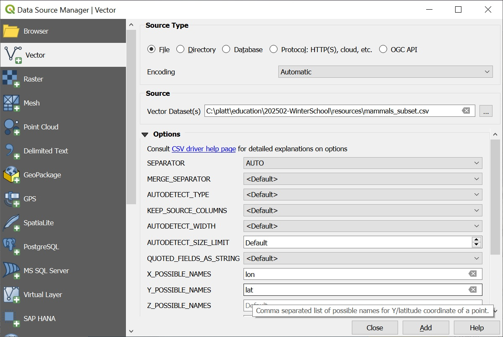
session_grid(NULL)
trkpt <- ursa:::spatialize("./input/track-general.geojson",style="laea",lon0=60)
session_grid(expand=1.1)
loc <- ursa:::spatialize("./input/marmam.geojson")
compose_open()
panel_new("white")
panel_plot(trackline(trkpt),lwd=3,col="grey30",alpha=0.3)
panel_decor(coast.fill="#00000010",margin=c(F,T,T,F),lang="ru")
ursa:::panel_cluster(loc["Вид"],legend="topleft",bg="#FFFFFFAF")
panel_annotation(lon=40,lat=72,label=expression(italic("БАРЕНЦЕВО МОРЕ"))
,fg="white",bg="grey70",cex=1.1)
panel_annotation(lon=80,lat=78,label=expression(italic("КАРСКОЕ МОРЕ"))
,fg="white",bg="grey70",cex=1.1)
compose_close()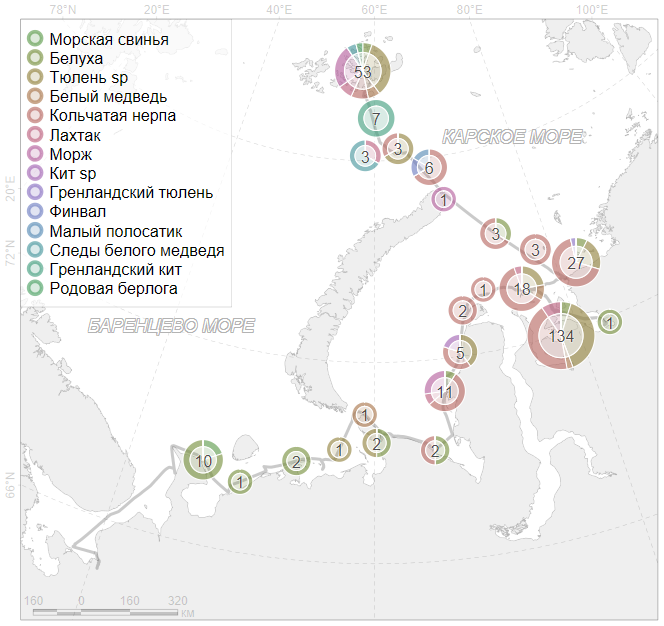
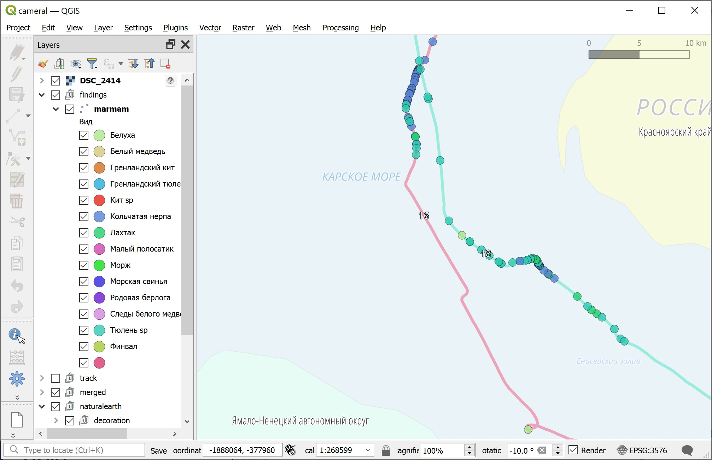
Загрузить находки
Настроить стили для отображения
Как правило, это растры: батиметрия, морской лёд.
Обычно используется пакет terra.
Ниже пример с использованием пакета ursa.
a <- ursa_read("input/gebco_2024_n82.0_s64.0_w30.0_e90.0.tif")
p <- colorize(a,breakvalue=c(-500,-200,-50,-20),pal="Blues",inv=TRUE)
display(p,coast.fill="beige",pointsize=16,lang="ru",units="Метры")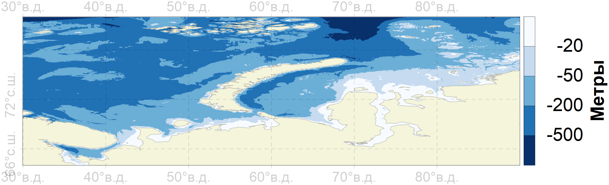
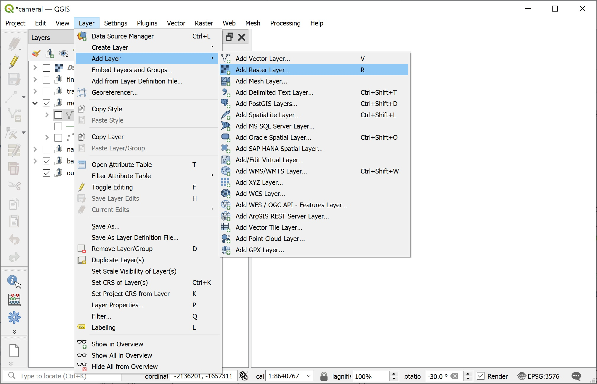
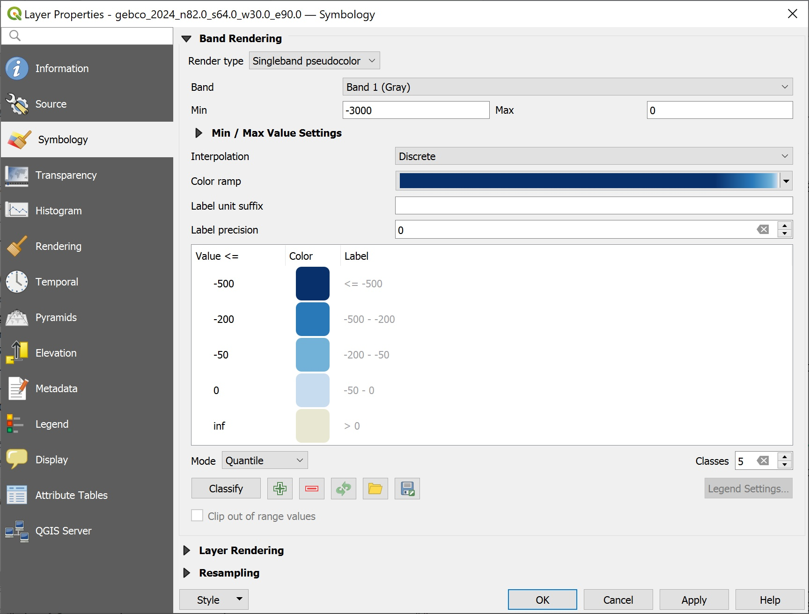
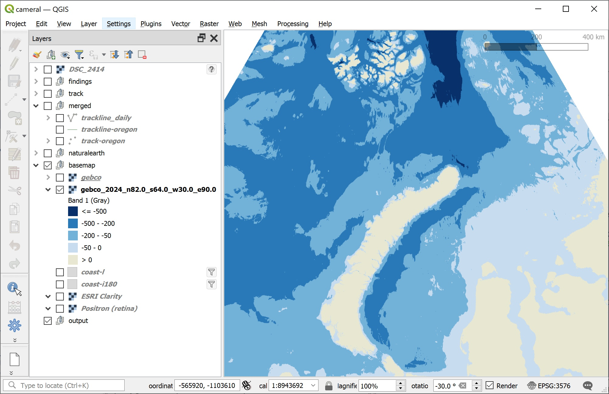
session_grid(NULL)
a <- ursa:::spatialize("./input/track-general.geojson",style="stere",lon0=60)
g1 <- regrid(spatial_grid(a),res=2000,border=100)
print(g1)
session_grid(g1)
ref <- ursa(0L)
ursa_write(ref,"./output/studyarea.tif")
display(ref,legend=NULL)List of 9
$ columns: int 1096
$ rows : int 1021
$ resx : num 2000
$ resy : num 2000
$ minx : num -1222000
$ maxx : num 970000
$ miny : num -2860000
$ maxy : num -818000
$ crs : chr "stere lon_0=60 lat_0=90 lat_ts=72 'WGS 84'"
- attr(*, "class")= chr ".ursaGrid"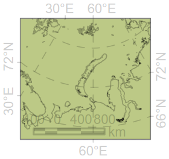
Используем сухопутные полигоны из OSM данных.
src <- "https://osmdata.openstreetmap.de/download/simplified-land-polygons-complete-3857.zip"
osmdata <- file.path("./output",basename(src))
if (!file.exists(osmdata))
download.file(src,osmdata,mode="wb")
list1 <- unzip(osmdata,exdir=tempdir(),junkpaths=TRUE)
session_grid(NULL)
land <- spatial_read(list1[grep("\\.shp$",basename(list1))])
file.remove(list1) |> invisible()
cntr <- spatial_centroid(land) |> spatial_coordinates()
ind <- which.min(cntr[,2])
land <- land[-ind,]ref <- ursa_read("./output/studyarea.tif")
ref <- regrid(ref,mul=1/4)
extended <- spatial_buffer(ursa:::spatialize(ursa_bbox(ref)),500*1e3)
coast <- spatial_intersection(spatial_geometry(land),extended)
coast <- sf::st_simplify(coast,ursa(ref,"cellsize"),preserveTopology=TRUE) |>
sf::st_cast("MULTIPOLYGON")
# здесь `sf::st_simplify` использована для упрощения, на практике используйте `sf::st_segmentize`
session_grid(ref)
dist2coast <- ursa:::.dist2(ref,coast)["dist"]*1e-3
ursa_write(dist2coast,"./output/dist2coast.tif")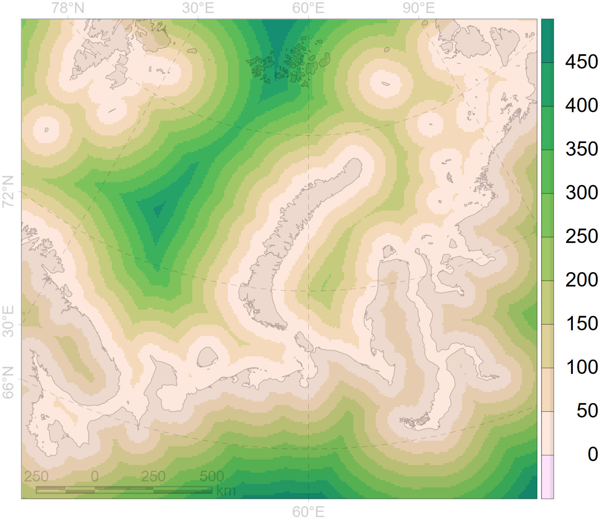
loc <- ursa:::spatialize("./input/marmam.geojson",resetGrid=TRUE)[c("time","Вид")]
b <- spatial_buffer(ursa:::spatialize(spatial_bbox(loc)),100*1e3)
b <- sf::st_segmentize(b,100)
coast <- spatial_intersection(b,spatial_geometry(land))
coast <- sf::st_segmentize(coast,100)
coast <- sf::st_cast(coast,"POINT")
dist2coast <- ursa:::.dist2(loc,coast)
cl <- coast[dist2coast$ind,]
loc$coast <- dist2coast$dist
seg <- cbind(spatial_coordinates(loc),spatial_coordinates(cl))
seg <- apply(seg,1,\(x) sf::st_linestring(matrix(x,ncol=2,byrow=TRUE)),simplify=FALSE)
seg <- sf::st_sfc(seg,crs=sf::st_crs(loc))
spatial_data(seg) <- data.frame(dist=round(loc$coast*1e-3,1))| time | Вид | coast | |
|---|---|---|---|
| 34 | 2023-07-14 19:33:30 | Кольчатая нерпа | 12902.682 |
| 154 | 2023-07-18 02:30:45 | Тюлень sp | 11753.703 |
| 165 | 2023-07-18 03:45:51 | Тюлень sp | 18684.944 |
| 167 | 2023-07-18 03:57:13 | Кольчатая нерпа | 20629.479 |
| 208 | 2023-07-20 14:23:23 | Кольчатая нерпа | 36411.220 |
| 244 | 2023-07-22 20:47:30 | Гренландский кит | 63476.426 |
| 282 | 2023-07-24 03:25:44 | Морж | 342.273 |
require(tmap)
tmap_mode("view")
m <- tm_shape(loc)+tm_dots("coast",alpha=0.5,group="Находка")+
tm_shape(cl)+tm_dots(alpha=0.2,group="До берега")+
tm_shape(seg)+tm_lines("dist",alpha=0.5,group="Между ними")tmap_mode("plot")
data(World)
m+tm_scale_bar()+tm_graticules(alpha=0.2)+tm_shape(World)+tm_borders()+
tm_shape(terra::rast("./output/dist2coast.tif"))+tm_raster(alpha=0.3)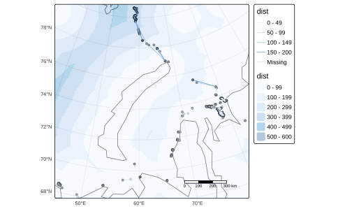